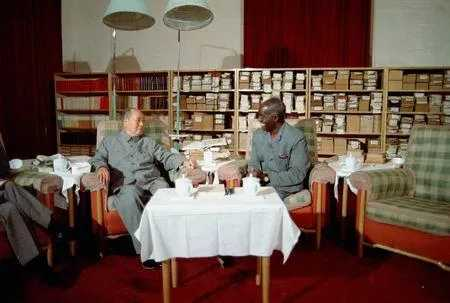
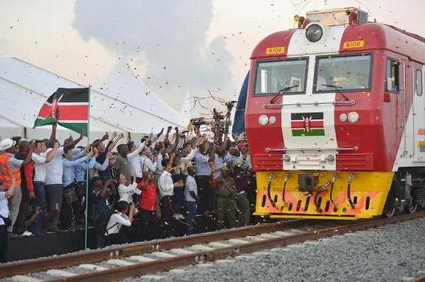
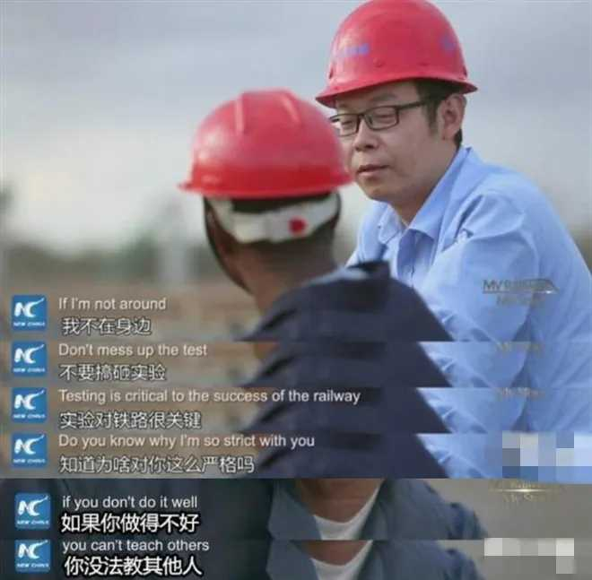
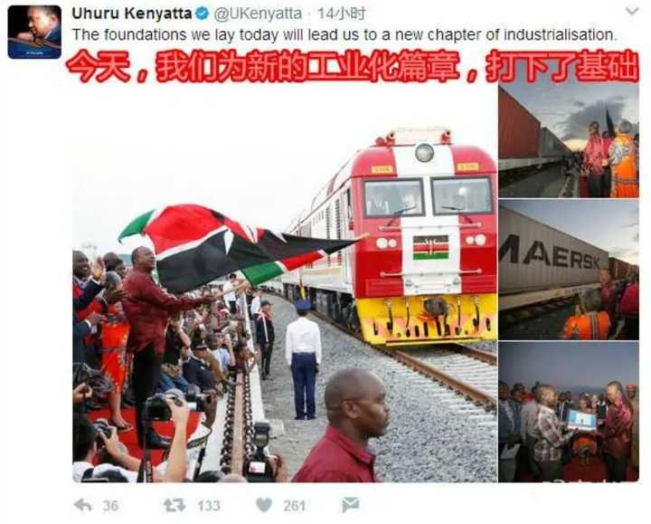

我为什么选择去非洲？
作者：曹丰泽 - 知乎共青团中央
“你为什么选择非洲？”
人们问了我同样的问题，包括我的父母、老师、同学、朋友、亲戚，甚至我的上司。
坦率地讲，这个问题我很难回答。如果只从我个人的角度来讲，这好像确实没有必要：我可以在大城市找到一份高薪的工作，获得户口，轻松拿到许多人羡慕不来的“大城市公民资格”；或者我也可以去到“体制内”，朝九晚五、安安稳稳度过余生。
我不知该如何利用眼下的、个人的因素去进行解释，只好把我的思路往前追溯，一直追溯到一个最本源的念头。我说出来，希望你不要笑话我：“一个共产党员的一生，究竟应该如何度过？”
从“三个世界”讲起
这个世界从来都没有绝对的公平，有的只是不断追求公平的理想者。1974年，毛泽东主席在会见时任赞比亚总统卡翁达时，提出了划分“三个世界”的理论。拥有强权的美国、苏联是第一世界，中间的日本、欧洲、加拿大是第二世界，剩下的亚洲、非洲、拉丁美洲等则是落后的第三世界国家。当第一和第二世界的发达国家们正打着冠冕堂皇的旗号，实则为了一己私利明争暗夺时，整个第三世界的人民则在贫穷、饥饿和疾病中苦苦挣扎。
1974年，毛主席会见赞比亚总统卡翁达
在第三世界面前，那些打着漂亮旗号的所谓“强国”，要么利用工业剪刀差大肆剥削，用几件垄断的工业品掠夺大量的优质自然资源；要么假意关怀，口惠而实不至，把援助经费变成宣传经费，让几个“非政府组织”抱着一两件可怜的援助物资换八个角度拍照，把自己包装成救苦救难的天使；要么打着“环保”的旗号破坏第三世界硕果仅存的工业，用对待动物的丑恶姿态对待渴望发展与尊严的第三世界人民，以满足部分发达国家的人猎奇的围观心态。更不必说他们向第三世界贩卖的战争、混乱、毒品……
嘴上全是主义，心里全是生意。在第三世界痛苦而看不到希望的现实面前，发达世界那一套连一套的“主义”全部宛如笑话。
中国也是第三世界的一员。虽然近年来经济发展比较迅速，但我们始终没有忘记那些发达世界强加给我们的痛苦和屈辱。被压迫者之间的互相理解，让我们能和欠发达的经济体之间很自然地走到一起。生活在一个更加公平的世界，这是我们国家一直以来追求的目标，也是我个人愿意为之努力的梦想。
所以，我们要做的是什么？撒钱吗？当然不是，这种说法太可笑了。
合作共赢，不是撒钱更不是“新殖民主义”
习惯上，很多人会把中国企业在非洲的一般生产经营活动称为“援建”。进而一些别有用心的人认为，中国企业都是在对外“撒钱”“做慈善”。这种说法是完全错误的，而且极大地窄化了中国与“一带一路”国家之间的关系，矮化了这些国家，仿佛这些国家没有造血能力，只能躺着吃援助。
确实有一些项目，是我们出于国际道义和人道主义精神进行的无偿援助，目的在于保障所在国居民的一些最基本生存需求，但这并不是主流。绝大多数中资企业在海外的工程项目，都是很标准的盈利项目，通过恰当的商业模式与所在国的政府或当地企业建立合作，赚取合理的利润。
说白了，中国企业在亚非拉国家，尤其是非洲的正常商业活动，之所以看起来像“撒钱”，完全是因为一些欧美的旧殖民宗主国企业实在太黑心了。他们利用垄断地位，赚取超额利润，养尊处优了几十年。如今明码标价、童叟无欺的中国企业进场，自然“抢了他们的生意”，“坏了规矩”。他们因此对中国企业不断地抹黑，甚至生造了个词叫什么“新殖民主义”。这个词简直贻笑大方：如果中国企业正常的商业合作、互利共赢叫“殖民”，那他们垄断、制裁，还有之前那些杀人、放火、强奸的行为又叫什么呢？
拿下订单靠的是实力，不是“收买”
对中国出海企业抹黑的人还有一套看似“自洽”的论调：中国人用“援助”“撒钱”，来收买欠发达国家的“人心”，让他们“感念中国的情”。暂且不说中国为什么要这样做，我们先来问一句：人心能被金钱收买吗？
2017年5月30日，蒙内铁路正式竣工通车（图片来源：视觉中国）
能被金钱收买的“人心”，有可能是真心吗？
我想这应该是全世界任何一个心智健全的成年人最基本的共识，也是最基本的常识。在商言商，是一个企业基本的职业素养。我们自己国内的扶贫工作，尚且会尽量减少采用直接发钱的这种“授人以鱼”的低级工作，而尽可能培养贫困户的造血能力，更何况是对外的商业合作呢！中国企业之所以能够在“一带一路”国家披荆斩棘，拿下海量订单，靠的是我们过硬的工程质量、极高的工作效率、公道的报价以及稳妥的融资渠道，而不是什么乱七八糟的东西。
第三世界的落后国家往往已然陷入痛苦的恶性循环。他们缺乏资金，没有能力开发资源、改善教育、发展经济，这又进一步导致他们缺乏资金，最终只能被旧殖民宗主国的垄断企业牢牢控制。中国的企业则往往能够考虑到他们的这一现状，提供一个妥善的商业运行系统，既能先把项目干完创造效益，又有一条稳定的还款渠道。所在国的经济发展与中国企业的长期盈利，不仅毫不冲突，而且相辅相成。在中国企业与那些傲慢无礼、报价高昂、好几年都挖不出一个基坑的垄断企业之间，任何一个正常的国家政府都会做出理性的选择。
投资金钱只能赚得金钱。要获得真心，唯一的方式是投入真心。一些规模较大的中国企业，在项目正常推进的基础上，还会履行企业的社会责任，为项目驻地附近改善基础设施，开设医院和学校，并培养大量的技能人才。
中国工程师指导肯尼亚工人
说是在商言商。其实，人非草木，孰能无情。一个工程下来，几百上千个日日夜夜，太阳东升西落，雨季过去，旱季又来，和手把手教你技术、领你种菜的师傅朝夕相处；你渐渐成长，他渐渐变老，年复一年。现在，他要回国了，你能说你和他没有一点感情？
世上哪有无情之人。天长日久，谁是真正想要交朋友，谁是贪图利益而故意破坏市场，老百姓的心里必然有一杆秤。
我们的一生，究竟要如何度过？
物质是一切的基础，任何人在贫病交加之时都会追求物质。但在吃饱穿暖之后，一个人，是选择放任自己的物质欲望永无休止地扩张，沉浸在物质的旋涡当中直至终老；还是有一些物质以外的宏大叙事，在更高的自我实现中获得快乐？这构成了人与人之间的本质分野。
渺小的人尚且如此，国家则更是这样。中国是一个拥有14亿人口的大国，决不能仅仅满足于关起门来自扫门前雪。那样的中国必然长不大，那样的中华民族也必然走不远。中国必须在世界上发挥更重要的作用，为我们人类这个物种承担更大的责任。
蒙内铁路通车，肯尼亚总统激动发推
我在非洲感受到最令我痛苦的，莫过于人类发展的不均衡。在第一世界的发达国家，一个最普通的人的生活，对非洲人来说，都是无法想象的天堂。这难道是因为我们人类的科技不够高吗？实际上，哪怕是能够在非洲推广一些上世纪五六十年代的科技，都可以为当地百姓的生活带来翻天覆地的改变。普速铁路、混凝土、拖拉机、种子和化肥，这些难道是什么高科技？问题根本不出在技术上，而恰恰就出在政治上，出在这个有问题的国际环境上。
在赞比亚，一个结实的无纺布袋子，在超市要卖到合人民币35元，相当于一名工人两天的工资。而这种袋子，就是你从超市拎回来准备扔掉，而被你节俭的奶奶攒了一柜子没处用最后沦为垃圾袋的那种。
对于这样的现实，你不想改变它吗？
人世间的苦难是相通的。我永远记得小时候看过的《猫和老鼠》动画片，里面有一集“午夜小食”，制作于1940年。1940年，我们正在家国沦丧的苦难中挣扎，而一户普通的美国人家，冰箱里的食物种类却是21世纪初的绝大多数中国家庭无法企及的。作为曾经遭受过苦难，如今刚刚摆脱的我们，是继续看着这种极端不均衡的世界永远像这样维持下去，还是从现在开始思考，我们应当做些什么，来改变这种极端的不均衡、不合理？
同学们，同志们，我们是时候起航了。
为了我们这个物种的明天，为了我们最初的，久远的，但却从未忘记的，因特纳雄耐尔的梦。